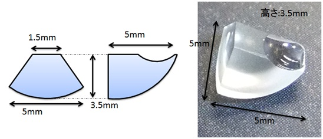
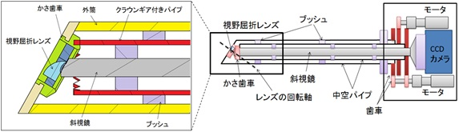
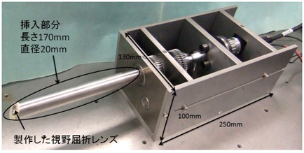
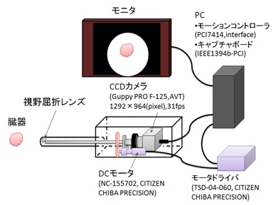
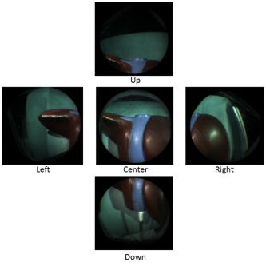

|
本体固定型可変視野内視鏡の開発 概要 本研究では腹腔鏡下手術の支援を目的として、本体を動かさずに視野のみを移動可能な内視鏡の開発を行う。 背景
近年の外科手術においては、低侵襲性に優れた腹腔鏡下手術が行われることが多くなっている。腹腔鏡下手術では作業領域に応じて視野を移動させる必要があるが、従来では体内で内視鏡を動かしてこの操作を行ってきた。しかしこれらの手法では臓器を傷つけたり、鉗子などの手術機器と干渉してしまう恐れがある。そのため本体は固定したまま視野のみを移動させることのできる腹腔鏡が求められている。 手法 本研究では指向角30度の斜視鏡を使用し、その先端に視野を30度屈折させるレンズを設置して、レンズと斜視鏡の鏡筒を独立で回転させることで広い視野移動の実現を目指す。このシステムによって内視鏡の視野中心は正面方向から60度まで移動可能と考えられる。視野を30度屈折させるレンズは現在存在しないため独自にレンズ設計を行うことが必要となる。光線追跡を用いて斜視鏡の視野を30度屈折させるレンズの設計を行い、図１のようなレンズを製作した。 
図１：斜視鏡の視野を30度屈折させるレンズ 可変視野内視鏡の機構 斜視鏡と視野屈折レンズを独立に回転させて視野移動を実現するために図２、３のような機構を設計した。  図２：製作した可変視野内視鏡（図）  図３：製作した可変視野内視鏡 システム全体の構成を図４に示す。PCからモータの回転を制御することにより、内視鏡の視野を任意の方向に移動可能なシステムとなっている。  図４：システム構成 視野移動の制御はDCモータを利用した位置制御を用いて行い、内視鏡先端から50mm離れたスクリーン上で視野中心が10mm刻みに移動可能なシステムとした。製作した可変視野内視鏡を用いて肝臓模型を撮影し、視野を上下左右に動かした際の画像を図５に示す。 
図５：視野移動の様子 評価実験
結論 本研究では、本体を固定したまま視野のみを移動可能な可変視野内視鏡の開発を行った。提案したシステムにより画角70度を保ったまま視野移動角±60度を達成した。また視野移動制御を実装し、任意の方向に視野を移動させることが可能となった。画質に関しては、斜視鏡と比較してそれほど大きな劣化は見られない良好な解像度を得ることができた。 参考文献
|

|
|
» TOP » 研究内容 » 新しい手術支援システムの実用化と評価手法の確立 » 本体固定型可変視野内視鏡の開発 |